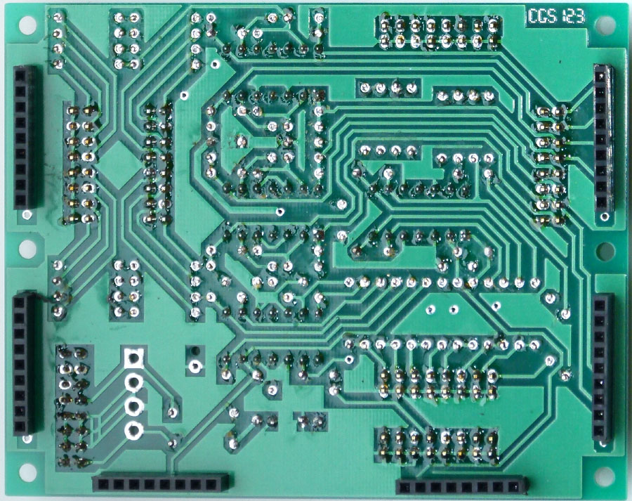
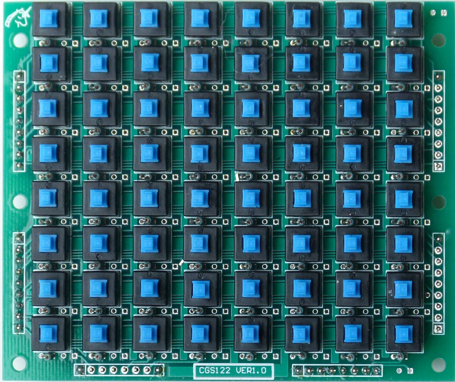
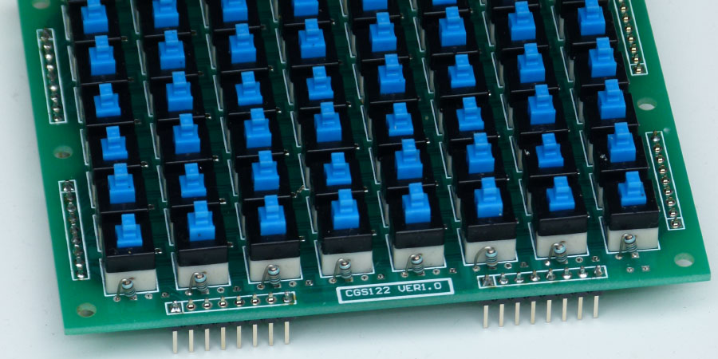
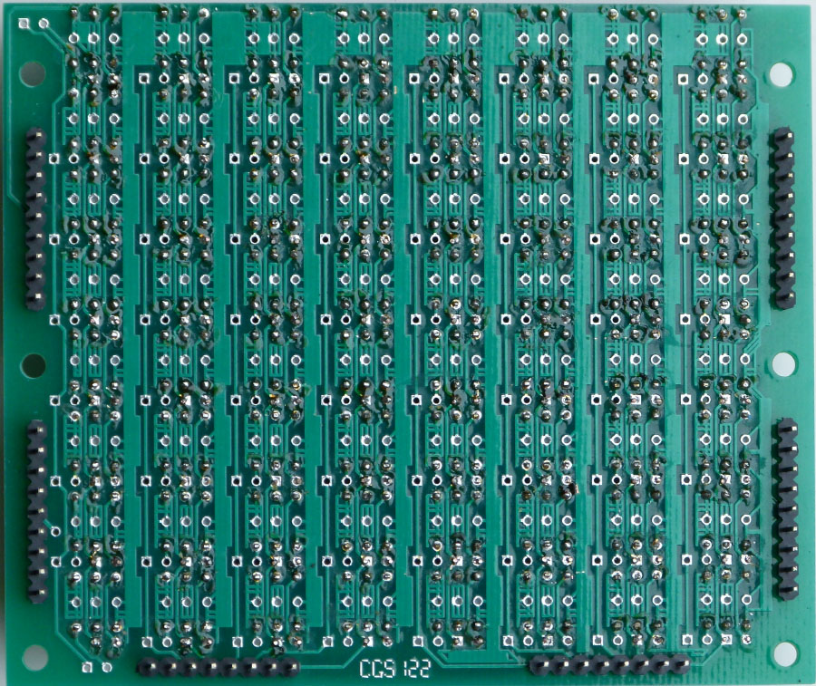

|
This is just a quick, photographic guide for the one or two people out there that actually have the boards. A little on how it works:
Construction
CGS123 Circuitry PCB.
 Rear of CGS123 Circuitry PCB.
 Switch PCB. Note that only half of the resistor positions are used. 1/8 W resistors are required. All resistors on this board are 100k 1%.
 Switch PCB. Note that only half of the resistor positions are used. 1/8 W resistors are required. The second resistor position is for a second matrix on the same board, allowing for stereo switching. The CGS123 interface board is only mono.
 Rear of switch PCB.
Notes:
This is a guide only. Parts needed will vary with individual constructor's needs. Can't find the parts? See the parts FAQ to see if I've already answered the question. Also see the CGS Synth discussion group.
Article, art & design copyright 2013 by Ken Stone
|